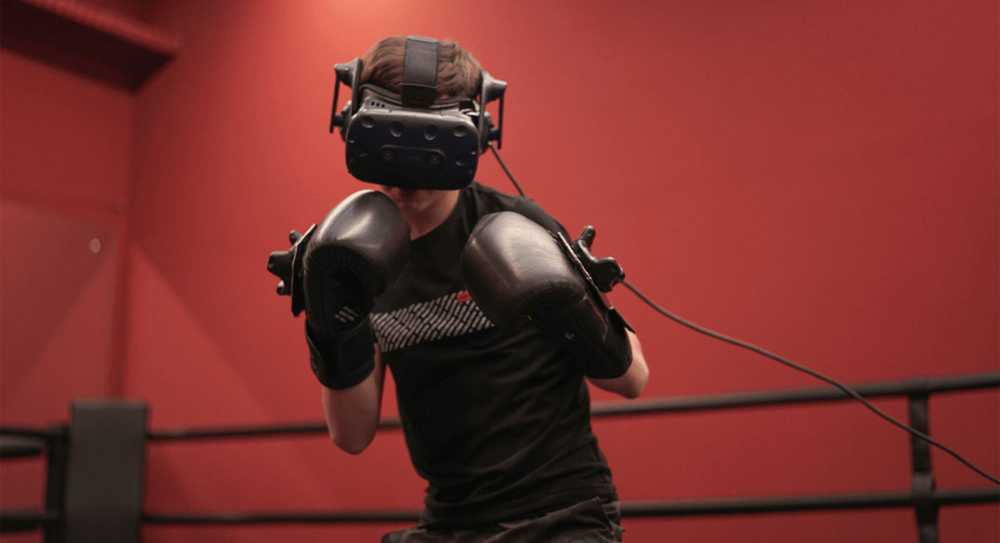
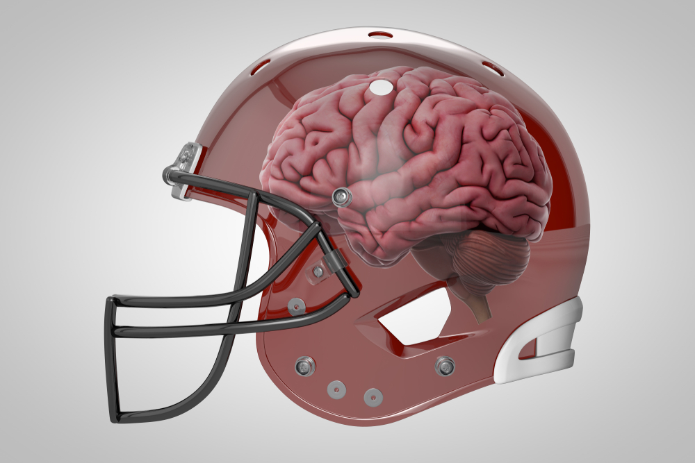
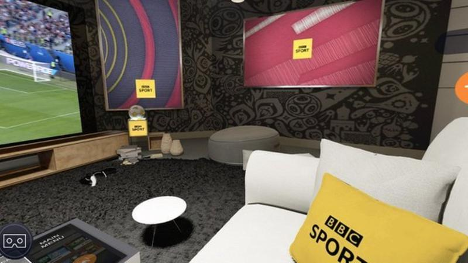
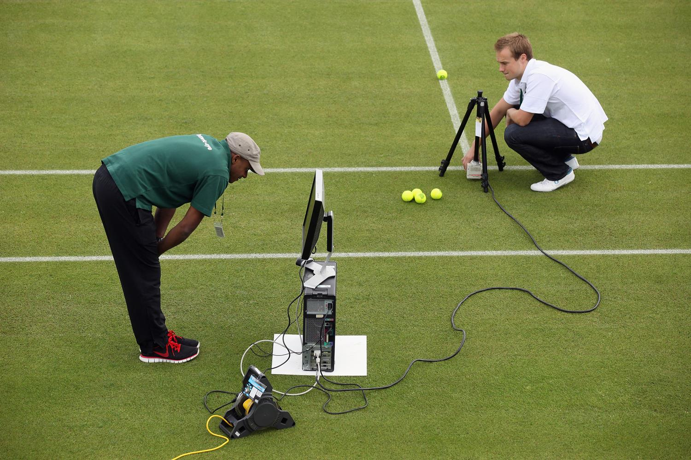
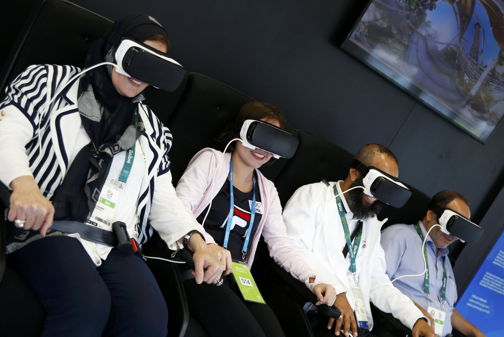

The use of virtual reality in various areas of life is growing steadily every year. Sports are no exception. The use of the possibilities of virtual reality in sports, including elite sports, has its advantages, but at the same time, its disadvantages, which will be discussed in this paper.
It is shown that the use of virtual reality technologies in sports has a whole range of advantages. They are due, in particular, to the removal of a number of restrictions imposed by real sports conditions. These technologies make it possible to prevent injury to athletes, allow the creation of any environmental conditions (weather, humidity), simulate different levels of training of rivals, and much more. Using the possibilities of virtual reality allows athletes not to depend on equipment, weather or competition venue, therefore they provide an opportunity to engage in hard-to-reach and expensive sports.

Starting this year, a training program has been launched for junior American football teams that allows using VR to demonstrate what happens with traumatic brain injuries, demonstrate the symptoms of a concussion and help young athletes recognize them in a timely manner. The program is called CrashCourse and is run jointly by American Youth Football & Cheer and TeachAids.
Many remember that the 2018 BBC already used AR and VR technology to broadcast the World Cup. Viewers got a 360-degree view of the game. The British football club Liverpool is working on a similar project. The club's administration understands that even in stadiums with thousands of people there is not always enough space for all the fans, and not all seats are successful. The club thought about using VR for more efficient broadcasting of the match. It is clear that the fan base will be able to experience stadium-like experiences with VR, and perhaps even stronger, as the filming will be done from better vantage points.
Thus, today we can state with certainty that virtual reality technologies most likely will not be able to completely replace the stands and the live presence of fans, but will significantly unload the stadiums. Also, systems based on the principles of augmented and virtual reality will help organize the training process more efficiently, which, obviously, can improve sports results, add to the entertainment of existing sports, and, possibly, accelerate the emergence of new world records.
Despite the conviction of skeptical citizens that stadiums are eternal and VR will never replace them, it can already be stated today that glasses will soon compete with noisy and cramped arenas. AR is also increasingly becoming part of the practice of both the training process and sports marketing, and its use in refereeing is no longer considered something new.
